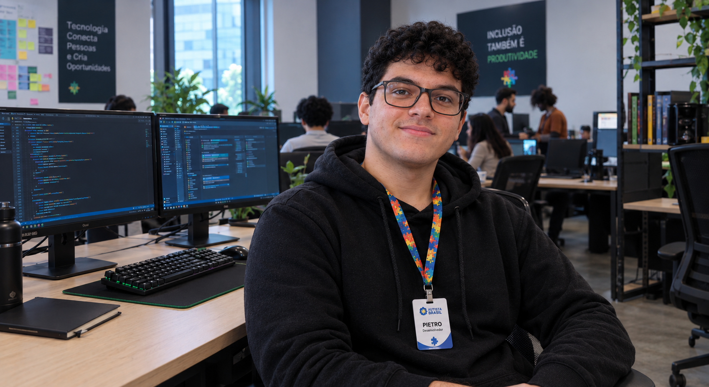

Transformando vidas com Inclusão e Tecnologia
Tecnologia e acolhimento caminhando juntos para incluir, capacitar e transformar a vida de pessoas autistas.
A AUTISTA BRASIL (AB) é uma organização sem fins lucrativos dedicada a promover a inclusão social, a autonomia e a empregabilidade de pessoas dentro do Espectro Autista (TEA). Conectamos tecnologia, voluntários, doadores e parceiros estratégicos para desenvolver ferramentas inovadoras, capacitações profissionais e redes de apoio que transformam barreiras cotidianas em pontes para o desenvolvimento pleno da comunidade autista e de suas famílias.

500+
Pessoas impactadas
20
Parceiros
10
Projetos ativos